In dem Register "Stamm" können die Grundstammdaten des Interessenten erfasst werden. Hierzu zählen u.a. die Bereiche "Adresse- und Kontaktdaten" und "Bankverbindungen".
Hinweis
Weitere Informationen bezüglich der Anlage von Interessenten und den Buttons des Programms "Interessentenverwaltung" sind dem Kapitel Interessentenverwaltung zu entnehmen.
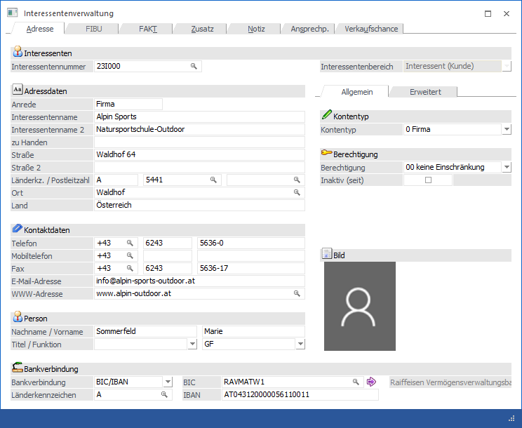
Folgende Eingabefelder, Einstellungen und Informationen stehen zur Verfügung:
Interessenten
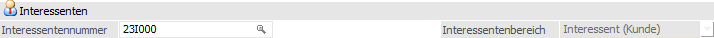
Ø Interessentennummer
An dieser Stelle wird die Nummer des Interessenten eingetragen. Diese ist max. 20stellig und alphanumerisch.
Ø Interessentenbereich
Bei der Neuanlage eines Interessenten kann an dieser Stelle hinterlegt werden, ob es sich um einen "Interessenten (Kunden)" oder einen "Anfragelieferanten" handelt. Ansonsten ist dieses eine statische Information, d.h. wurde der Interessent einmal gespeichert, so kann der Interessentenbereich nicht mehr verändert werden.
Hinweis
Während der Neuanlage wird der gewählte Interessentenbereich mit der neuen Interessentennummer verglichen. Wenn die Nummer nicht zum gewählten Bereich lt. Einstellungen in den FAKT-Parametern passt, so wird auf dieses hingewiesen.
Adressdaten
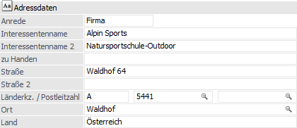
Ø Anrede
max. 255stellig, alphanumerisch
Ø Interessentenname 1 / Interessentenname 2 (bei Interessenten des Kontentyps "Firma") bzw. Nachname / Vorname (bei Interessenten des Kontentyps "Person")
2 x 255stellig, alphanumerisch
Ø Titel / Funktion (nur bei Interessenten des Kontentyps "Person")
Hier kann der Titel bzw. eine Funktion hinterlegt werden. Ist ein Titel oder eine Funktion noch nicht vorhanden, so wird diese(r) durch das Eintragen in das Feld "Titel" bzw. "Funktion" automatisch angelegt.
Hinweis
Sobald ein Titel bzw. eine Funktion in keinem Interessenten, Personenkonto und Kontakt mehr zugeordnet ist, so wird diese(r) automatisch gelöscht und steht somit auch im Feld "Titel" bzw. "Funktion" nicht mehr zur Verfügung.
Ø Zu Handen
255stellig, alphanumerisch
Ø Straße / Straße 2
2 Zeilen mit je max. 255 Stellen
Ø Länderkennzeichen
Durch Eingabe des Länderkennzeichens (3stellig) wird lt. Länderstamm das Land sowie die Landesvorwahl bereits automatisch vorbelegt.
Ø Postleitzahl / Postleitzahl 2
An dieser Stelle wird die Postleitzahl hinterlegt. Durch Drücken der Taste F9 kann nach allen bereits angelegten Postleitzahlen gesucht werden. Wird die entsprechende Postleitzahl gefunden, so wird auch der Ort automatisch übernommen und muss nicht extra eingegeben werden.
Hinweis
In das Feld "Postleitzahl 2" wird in der Regel das Postfach (wenn vorhanden) hinterlegt.
Ø Ort
In diesem Feld wird der Ort der Anschrift hinterlegt (max. 50stellig). Auch hier kann durch Drücken der F9-Taste nach allen bereits angelegten Orten mit ihren Postleitzahlen gesucht werden.
Ø Land
Hier erfolgt die Hinterlegung des Landes der Anschrift (max. 30stellig). Durch Eingabe des Länderkennzeichens wird dieses Feld automatisch gefüllt.
Kontaktdaten
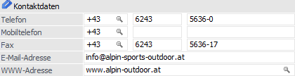
Ø Telefon / Mobiltelefon / Fax
Hier können die Landesvorwahl, die Ortsvorwahl und die Telefonnummer für Telefon, Mobiltelefon und Fax eingetragen werden.
Ø E-Mail-Adresse
An dieser Stelle kann die allgemeine E-Mail-Adresse des Interessenten hinterlegt werden (max. 100stellig). Nach Eingabe der Mailadresse erfolgt eine Prüfung ob…
ü … die Adresse aus mindestens 6 Zeichen besteht.
ü … das "@"-Zeichen und ein "." (der Punkt muss nach dem "@" sein) vorkommen.
ü … mindestens 1 Zeichen vor dem "@", zwischen dem "@" und dem ".", und nach dem "." ist.
Werden diese Kriterien nicht erfüllt, so wird dies mit einer entsprechenden Meldung angezeigt; die Mailadresse kann jedoch trotzdem gespeichert werden.
Ø WWW-Adresse
In diesem Feld kann die Internetadresse des Personenkontos hinterlegt werden.
Person / Firma
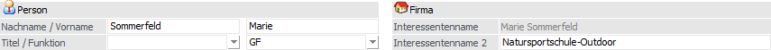
Abhängig vom "Kontentyp" stehen die unter " Adressdaten" nicht angezeigten Eingabefelder hier zur Verfügung.
Hinweis
Wenn ein Konto des Typs "Person" auf ein Firmenkonto umgeschlüsselt wird, so werden Interessentenname und Interessentenname 2 in die Adressdaten übernommen umgekehrt genauso.
Ø Nachname / Vorname / Titel / Funktion
Es handelt sich um einen Interessenten des Typs "Firma". Hier können die Daten einer natürlichen Person hinterlegt werden.
Hinweis
Die Hinterlegung einer natürlichen Person für Interessenten des Typs "Firma" hat keine Auswirkungen auf die Firmenkontakte.
Ø Kontoname / Kontoname 2
Es handelt sich um einen Interessenten des Typs "Person". Der Inhalt des Felds "Interessentenname" ergibt sich automatisch aus "Titel", "Vorname" und "Nachname".
Bankverbindung
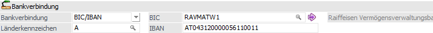
In dem Bereich "Bankverbindung" können die Daten für die Standardbankverbindung hinterlegt werden. Diese Informationen werden u.a. in den Belegformularen auch über die Tabelle "T288" zur Verfügung gestellt.
Ø Bankverbindung
Hier kann über die Auswahlliste zwischen "BLZ/Kontonummer" und "BIC/IBAN" gewählt werden. Wählt man "BLZ/Kontonummer", so werden die Felder "BLZ" und "Konto" aktiviert und können befüllt werden.
Ø Länderkennzeichnung
An dieser Stelle wird das Länderkennzeichen der Bankverbindung hinterlegt.
Ø BLZ (bei Bankverbindung des Typs "BLZ/Kontonummer")
Die Bankleitzahl kann mittels Matchcode im Bankleitzahlenstamm gesucht und ausgewählt werden.
Ø Kontonummer (bei Bankverbindung des Typs "BLZ/Kontonummer")
Hier kann die Kontonummer für das betroffene Personenkonto hinterlegen werden.
Ø BIC (bei Bankverbindung des Typs "BIC/IBAN")
An dieser Stelle kann die BIC der Bank hinterlegt werden (max. 11stellig). Wird kann die Wird dort die BLZ und die Kontonummer eingetragen kann mittels Drill-Down in die IBAN/BIC Maske gewechselt werden. Das Feld "BIC" wird dadurch automatisch gefüllt. Der BIC darf max. 11 Stellen lang sein.
Ø  Bankdaten editieren
Bankdaten editieren
Durch Anwahl dieses Buttons wird das Fenster "BLZ-Stamm / IBAN-Aktualisierung" geöffnet und die Banken aufgrund der aktuell hinterlegten BLZ bzw. BIC zur Bearbeitung vorgeschlagen.
Ø IBAN (bei Bankverbindung des Typs "BIC/IBAN")
Zur Eingabe der IBAN stehen 42 Zeichen (alphanumerisch) zur Verfügung. D.h. es ist eine Eingabe der max. Anzahl der IBAN von 34 Stellen + Leerzeichen nach jeder vierten Stelle möglich. Die IBAN (International Bank Account Number) ist eine international genormte Darstellung der Kontoverbindung und setzt sich aus dem Länder-Code, den Prüfziffern, der Bankleitzahl und der Kontonummer zusammen. Diese einheitliche Kontonummernsystematik auf europäischer Ebene ermöglicht eine kostengünstige, vollautomatische und maschinelle Verarbeitung von Zahlungen.
Hinweis
Wenn in der Interessentenverwaltung in der Bankverbindung oder den weiteren Bankverbindungen die IBAN hinterlegt ober geändert wird, dann erfolgt eine Prüfung auf die bislang hinterlegte Bankleitzahl und Kontonummer. Wird eine Abweichung festgestellt, so wird ein Hinweis ausgegeben und die Bankleitzahl samt Kontonummer gelöscht.
Ø Bankenname
An dieser Stelle wird der Name der gewählten Bank angezeigt.
Unterregister "Allgemein"
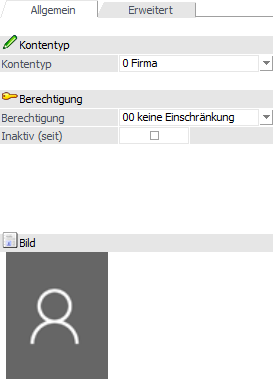
In dem Unterregister "Allgemein" kann u.a. der Kontentyp angegeben werden.
Kontentyp
Ø Kontentyp
Mit dieser Option kann entschieden werden, ob der Interessent als so genanntes "Firmenkonto" oder "Konto für eine Person" angelegt wird.
Wird die Option "Person" angewählt so stehen andere Eingabefelder zur Definition des Kontos zur Verfügung als bei "Firmenkonten".
Achtung
Wird der Typ "Person" gewählt, so wird automatisch beim Abspeichern des Interessenten auch ein Ansprechpartner angelegt und abgespeichert, wobei die Namens- und Adressfelder vom Konto übernommen werden.
Zusätzlich wird auch das Kennzeichen "Adresse vom Konto verwenden" gesetzt, d.h. die Adressfelder können im Register "Ansprechpartner" nicht mehr editiert werden, werden allerdings automatisch aktualisiert, sobald die Adresse des Kontos geändert wird.
Berechtigung
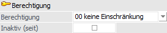
Ø Berechtigung
Für jeden Interessenten kann ein Berechtigungsprofil vergeben werden. Wenn der Anwender einen Interessenten aufruft, wird geprüft, ob der Anwender einer Benutzergruppe zugeordnet wurde, welche in dem jeweiligen Profil enthalten ist und ob somit eine Bearbeitung erlaubt wäre (nähere Informationen entnehmen Sie bitte dem WinLine ADMIN - Handbuch).
Hinweis
Benutzern des Typs "Administrator" oder mit der Administratorenberechtigung "Benutzeradministrator" steht in der Auswahlbox der Punkt ">> Neues Profil" zur Verfügung. Über die Anwahl dieses Eintrags kann in der Folge ein neues Berechtigungsprofil angelegt werden.
Ø Inaktiv (seit)
Wenn ein Datensatz auf Inaktiv gesetzt wird, hat das vorerst nur die Auswirkung, dass er nicht mehr im Matchcode angezeigt wird. Durch einen Reorg kann dieser Datensatz aus der Datenbank entfernt werden. Voraussetzung dafür ist, dass für den Datensatz keine Bewegungsdaten (Belege etc.) vorhanden sind. Nähere Informationen zum Reorganisieren entnehmen Sie bitte dem WinLine START-Handbuch.
Bild
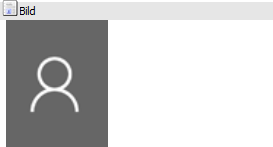
An dieser Stelle wird das Bild des Interessenten dargestellt. Ein neues Bild kann durch Anwahl des aktuellen Bilds oder mit Hilfe des Buttons "Bildersuche" zugewiesen werden.
Unterregister "Erweitert"
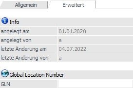
In dem Unterregister "Erweitert" kann u.a. die GLN hinterlegt werden. Zusätzlich stehen Infos z.B. zur Anlage zur Verfügung.
Info
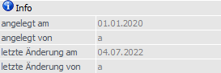
In diesem Bereich werden diverse Informationen zu dem ausgewählten Interessenten angezeigt.
Ø angelegt am / angelegt von / letzte Änderung am / letzte Änderung von
In diesen Feldern wird das Datum bzw. das Login des Benutzers der Interessentenanlage, sowie der letzten Änderung, protokolliert.
Global Location Number
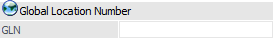
Ø GLN
An dieser Stelle kann die GLN hinterlegt werden. Es handelt sich hierbei um eine eindeutige Kennzeichnung, welche dem Interessenten von einer globalen Registrierungsorganisation zugewiesene wurde.
Hinweis
Für das e-Billing DE ("ZUGFeRD/Factur-X" und "XRechnung") ist die Verwendung des Identifikationsschemas GLN/EAN möglich.